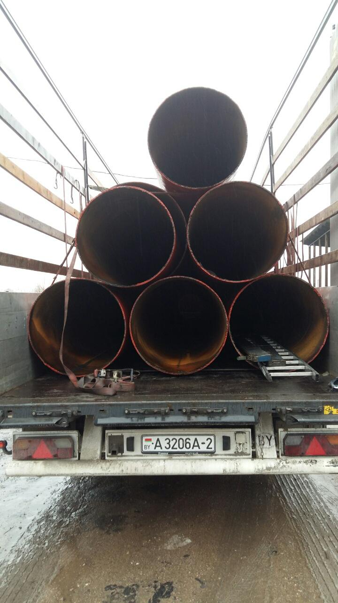
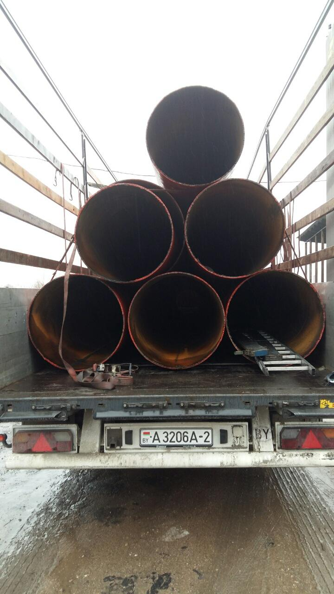
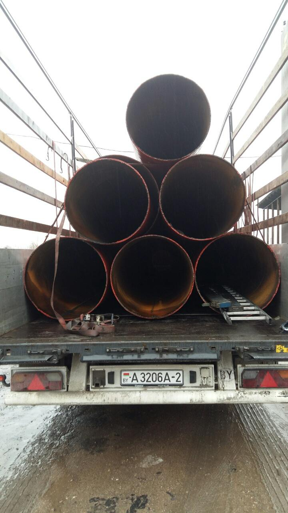

Пескоструйная обработка и покраска
По желанию клиента мы имеем возможность пескоструйной обработки и покрытия эмалью на водной основе
(антикоррозионная).


 


Мы используем купершлак, который позволяет очищать около 20 тонн труб в день.
Для защиты от коррозии мы используем эмаль Unicor-Bel:
"Водно-дисперсионная грунтовка «Unikor РБ» имеет сертификат соответствия и свидетельство о государственной
регистрации, выданное в Республике Беларусь, а также международный сертификат «WRAS», разрешающий
использование для внутреннего и наружного покрытия стальных и чугунных труб в холодной воде."
